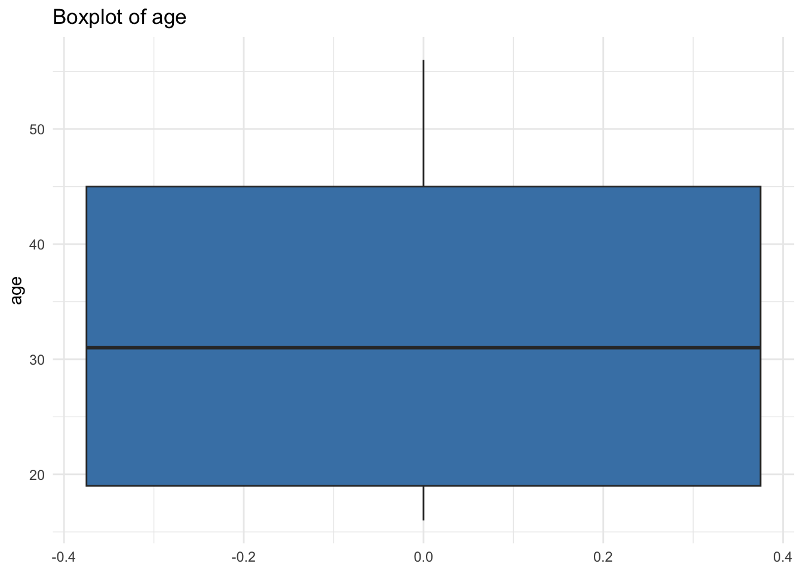

library(tidyverse)Presentation 4B: Scripting in R - Functions
In this section we will learn more about flow control and how to make more complex code constructs in R.
User defined Functions
User defined functions help us to re-use and structure our code.
We will use BMI calculation as an example for this part.
#measurements of one individual
weight_kg <- 70
height_m <- 1.80We calculate BMI with this formula:
bmi <- weight_kg/height_m^2
bmi[1] 21.60494If we plan to calculate BMI for multiple individuals it is convenient to write the calculation into a function.
Function name:
calculate_bmi.Function parameters:
weight_kgandheight_m.The return value:
bmi.
The return statement specifies the value that the function will return when called.
calculate_bmi <- function(weight_kg, height_m){
bmi <- weight_kg/height_m^2
return(bmi)
}We can now call the function on our previously defined variables.
calculate_bmi(weight_kg = weight_kg,
height_m = height_m)[1] 21.60494We can also pass numbers directly to the function.
calculate_bmi(weight_kg = 100,
height_m = 1.90)[1] 27.70083Argument Order in Function Calls
If we specify the parameter names, the order can be changed.
calculate_bmi(height_m = 1.90,
weight_kg = 100)[1] 27.70083If we do not specify the parameter names, the arguments will be matched according to the position - so be careful with this.
calculate_bmi(1.90,
100)[1] 0.00019Combining function call with if-statement
We can combine user-defined functions with if-else statements, so that the if-else will decide whether we execute the function or not.
#measurements of one individual
age <- 45
weight_kg <- 85
height_m <- 1.75If we want to calculate BMI only for individuals over the age of 18:
if (age >= 18){
calculate_bmi(weight_kg, height_m)
}[1] 27.7551Combining function call with for-loops
Or we can choose to execute our function once for every element of an iterable, e.g. every row in a dataframe:
df <- data.frame(row.names = 1:5,
age = c(45, 16, 31, 56, 19),
weight_kg = c(85, 65, 100, 45, 76),
height_m = c(1.75, 1.45, 1.95, 1.51, 1.89))
df age weight_kg height_m
1 45 85 1.75
2 16 65 1.45
3 31 100 1.95
4 56 45 1.51
5 19 76 1.89Print ID, weight, and height of all individuals.
for (id in rownames(df)){
weight <- df[id, 'weight_kg']
height <- df[id, 'height_m']
print(c(id, weight, height))
}[1] "1" "85" "1.75"
[1] "2" "65" "1.45"
[1] "3" "100" "1.95"
[1] "4" "45" "1.51"
[1] "5" "76" "1.89"Call function to calculate BMI for all individuals.
for (id in rownames(df)) {
weight <- df[id, 'weight_kg']
height <- df[id, 'height_m']
bmi <- calculate_bmi(weight, height)
print(c(id, bmi))
}[1] "1" "27.7551020408163"
[1] "2" "30.9155766944114"
[1] "3" "26.2984878369494"
[1] "4" "19.7359764922591"
[1] "5" "21.2760001119789"Combination of function call, if-statement and for-loops.
Print BMI for individuals that are 18 years old or older.
for (id in rownames(df)) {
if (df[id, 'age'] >= 18) {
weight <- df[id, 'weight_kg']
height <- df[id, 'height_m']
bmi <- calculate_bmi(weight, height)
print(c(id, bmi))
} else {
print(paste(id, 'is under 18.'))
}
}[1] "1" "27.7551020408163"
[1] "2 is under 18."
[1] "3" "26.2984878369494"
[1] "4" "19.7359764922591"
[1] "5" "21.2760001119789"Adding BMI to the data frame.
for (id in rownames(df)){
if (df[id, 'age'] >= 18) {
weight <- df[id, 'weight_kg']
height <- df[id, 'height_m']
bmi <- calculate_bmi(weight, height)
} else {
bmi <- NA
}
df[id, 'bmi'] <- bmi
}Have a look at the data frame.
df age weight_kg height_m bmi
1 45 85 1.75 27.75510
2 16 65 1.45 NA
3 31 100 1.95 26.29849
4 56 45 1.51 19.73598
5 19 76 1.89 21.27600Plotting in functions
Define function that creates boxplots
my_boxplot <- function(dataframe, variable = ''){
p <- ggplot(data = dataframe,
aes(y = !!sym(variable))) + # Use variable as column reference
geom_boxplot(color = 'blue') +
theme_bw() +
labs(title = paste('Boxplot of', variable)) # Use variable as string
return(p)
}Look at column names of df
colnames(df)[1] "age" "weight_kg" "height_m" "bmi" colnames(df)[1][1] "age"Run function on age.
my_boxplot(dataframe = df, 'age')Or equivalently
my_boxplot(dataframe = df, colnames(df)[1])
Error handling in user-defined functions
Currently our BMI function accepts all kinds of inputs. However, what happens if we give a negative weight?
calculate_bmi(weight_kg = -50, height_m = 1.80)[1] -15.4321We should require that both weight and height need to be positive values:
calculate_bmi_2 <- function(weight_kg, height_m) {
# Check if weight and height are numeric
if (!is.numeric(weight_kg) | !is.numeric(height_m)) {
stop("Both weight_kg and height_m must be numeric values.")
}
# Check if weight and height are positive
if (weight_kg <= 0) {
stop("Weight must be a positive value.")
}
if (height_m <= 0) {
stop("Height must be a positive value.")
}
# Calculate BMI
bmi <- weight_kg / height_m^2
# Check if BMI is within a reasonable range
if (bmi < 10 | bmi > 60) {
warning("The calculated BMI is outside the normal range. Please check your input values.")
}
return(bmi)
}When we try to run calculate_bmi_2 with a negative weight we now receive an error:
calculate_bmi_2(weight_kg = -50, height_m = 1.80)We also added a check whether the calculated BMI is within the normal range:
calculate_bmi_2(weight_kg = 25, height_m = 1.80)Warning in calculate_bmi_2(weight_kg = 25, height_m = 1.8): The calculated BMI
is outside the normal range. Please check your input values.[1] 7.716049Running calculate_bmi_2 with appropriate inputs:
calculate_bmi_2(weight_kg = 75, height_m = 1.80)[1] 23.14815Out-sourcing functions to an Rscript you source
It is cleaner to collect all your functions in one place, and perhaps that place should not be your analysis script. You can instead save your functions in a separate R script and source it inside your analysis script to have access to all your functions without them cluttering your workflow.
We have create a file named presentation4_functions.R and copied our two function definitions for calculate_bmi and calculate_bmi_2 into it.
Now we remove our function definitions from the global environment to demonstrate how to source them from an external file.
rm(list = "calculate_bmi", "calculate_bmi_2")By sourcing a script, all global variables (including functions) in that script will be loaded and appear in the Global environment in the top left corner. Here we source the functions.R script. Check the environment to confirm that the two functions appeared.
source('./presentation4B.R')After we sourced the functions script the calculate_bmi function can be used just like if it was defined in the main script. If you work on a larger project and write multiple functions, it is best practice to have a function script and source it in your main script.
calculate_bmi_2(weight_kg = 67,
height_m = 1.70)[1] 23.18339Apply functions
If you want to run a function multiple times — especially across elements in a vector, matrix, or list — R provides a powerful set of tools called the apply family of functions. These are often used instead of writing explicit for-loops and we will go through three of them here.
apply()
Used for matrices or 2D arrays. MARGIN = 1: apply function to rows MARGIN = 2: apply function to columns
apply(df, 1, sum) # sum of each row - does not make sense here 1 2 3 4 5
159.5051 NA 159.2485 122.2460 118.1660 apply(df, 2, mean) # mean of each column age weight_kg height_m bmi
33.40 74.20 1.71 NA lapply()
Applies a function to each element of a list (or vector) and returns a list.
lapply(FUN = sum,
list(c(1, 2, 3, 4, 6),
c(5, 7, 8, 4, 6),
c(5, 32, 6, 74, 6536)))[[1]]
[1] 16
[[2]]
[1] 30
[[3]]
[1] 6653mapply()
Applies a function to multiple inputs in parallel — like a for loop across multiple vectors. You can also use mapply as an alternative to calling the function in a for-loop (calculate_bmi_2(weight_kg[i], height_m[i]) for each row).
mapply(FUN = calculate_bmi_2,
weight_kg = df$weight_kg,
height_m = df$height_m)[1] 27.75510 30.91558 26.29849 19.73598 21.27600